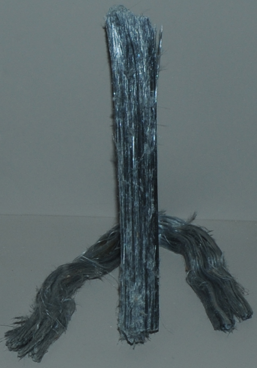

|
This sample of the crocidolite variety of riebeckite is from Todos Santos, Cochabamba, Bolivia. The center bundle is about 25 cm high.
These two samples typify what is called "blue asbestos", which is notorious for its attributed risk of lung cancer for those who are exposed. In particular, there is a large body of literature about the health hazards of South African blue asbestos.
| 
|